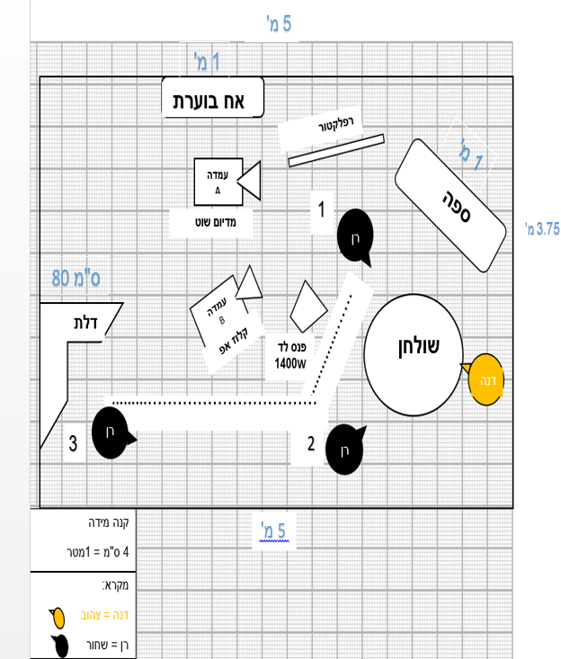
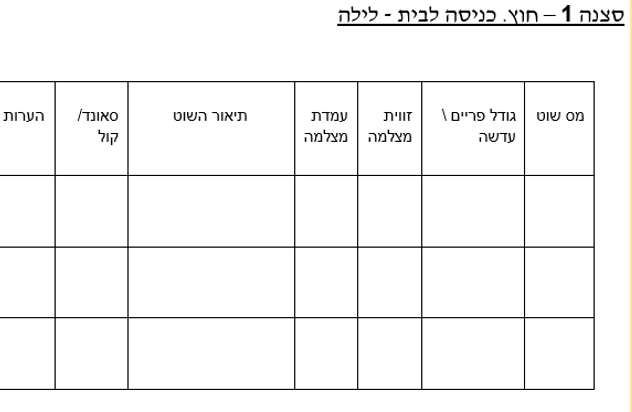

📽️ סרטון 6.1 — פלורפלן
*הסרטון הופק ומוצג על ידי טומי כהן - מדריך בפיקוח
"פלור פלאן" בתרגום חופשי הוא תוכנית רצפה, ומשמעותו שרטוט הלוקיישן / הסט במבט על. מטרותיו: לשמש טיוטה לתכנון הלוקיישן, לשמש את צוותי הארט וההפקה להקמת הסט, לשמש מפת התמצאות לכלל הצוות, לשמש את הבמאי לתכנון התנועות וההתרחשות, ולשמש את צוות הצילום והתאורה לתכנון השוטים והסטאפים.

📐 מהו פלור פלאן?
תכנון אתר צילום של כל סצנה על דף מילימטרי ובקנה מידה, שנקבע לאחר מדידת אתר הצילום. חשיבותו — ביכולת לתכנן במדויק את עמדות השחקנים מול עמדות הצילום, ומכך להחליט על גודל העדשה בהתאם למרחק ולגודל הפריים הנדרש.
🔄 שלבי העבודה
שלב 1 — העמדת שחקנים
הבמאי מעמיד על הפלור פלאן את השחקנים ומסמן את תנועותיהם במרחב החלל.
שלב 2 — עמדות מצלמה
לאחר גיבוש העמדת השחקנים, הבמאי מסמן את עמדות המצלמה בהתאם לנקודת המבט שבחר.
שלב 3 — תסריט מצלמה
רק לאחר שסיים את כל ההעמדות בכל הסצנות, יתפנו הבמאי והצלם לכתוב תסריט מצלמה.
🧩 מרכיבי הפלורפלן
🪑 עצמים בסצנה
נסמן עצמים שאנו מתכננים שיהיו בסצנה בשעת הצילומים, ולא עצמים שבהכרח נמצאים בלוקיישן. כלומר, נבנה את מרחב הסצנה הרצוי.
🚪 פתחים בלוקיישן
דלתות, חלונות או מעברים בין חדרים יסומנו בפלור פלאן. אם הפתח נפתח — יסומן גם כיוון הפתיחה.
📏 מידות הלוקיישן
על הצוות למדוד את הלוקיישן בעת סיור הלוקיישנים. המידות יתנו נתונים על מרחק המצלמה מהשחקן, יאפשרו להחליט באילו עדשות להשתמש, לדעת עד כמה ניתן לתמרן עם תנועות מצלמה, והיכן יש מקורות אור טבעיים.
👤 סימון דמויות
הצורה הפשוטה והיעילה ביותר: עיגול (ראש הדמות) + משולש (כיוון המבט). כל דמות ממוספרת, והמספר מתאים לשמה במקרא.
🏃 תנועת דמויות
נסמן את הדמות בנקודת ההתחלה, אחר כך את מסלול התנועה (בקו מקווקו), ולבסוף את נקודת העצירה.
💡 הפלור פלאן מתאים במיוחד לשוטים של דולי או טרוולינג, ואינו שימושי לתנועות כמו טילט או מנוף — מפני שאינו יכול לבטא את הממד השלישי של המרחב.
❓ שאלות מנחות
• 1. האם מדדתם את החללים והאלמנטים הנלווים בחדר?
• 2. האם סימנתם את הדמויות ואת מסלולן בשוטים?
• 3. האם סימנתם מצלמות ותנועתן?
• 4. האם סימנתם את התאורה?
📽️ סרטון 6.2 — שוטינג
*הסרטון הופק ומוצג על ידי טומי כהן - מדריך בפיקוח
שוטינג אינו דבר טכני, לא צילום של אנשים מדברים, ולא כלי שנועד לתת כיסוי לסצנה. שוטינג משפיע על הדרך בה נספר את הסיפור, על הז'אנר שבחרנו, והוא משפיע על היצירה כולה.
🎯 מהו שוטינג?
ברמה השטחית — טבלת השוטים ביצירה שלכם. אך למעשה, שוטינג הוא בחירה והחלטה: מהו גודל השוט, מה יהיה בפריים, מה יהיה מחוץ לפריים, האם השוט על חצובה או בתנועה, איזה סוג תנועה, ומענה לשאלות רבות נוספות.
⚠️ שוטינג אינו עניין טכני — רשימת גדלי שוטים. זהו תכנון הסיפור שלנו!
💭 שוטינג זה שאילת שאלות
דרך מי נחווה את הסצנה (נקודת מבט רגשית)? מה הערך של הסצנה וכיצד לבטא אותו? זה תהליך הדורש זמן, דראפטים וחיפוש. אין זה "תרגום" התסריט לגדלי פריימים.
🔍 מה משפיע על שוטינג?
● מיהו גיבור הסצנה (נקודת מבט)?
● מה הוא מרגיש במהלך הסצנה (המוקד הרגשי)?
● כיצד אני מבטא את מה שהוא מרגיש?
● מהו הז'אנר?
● מדוע הסצנה מופיעה כאן? מה מטרתה, וכיצד אצליח לבטא אותה?
📹 השוטינג מתקיים גם עבור המסלול התיעודי, במיוחד עבור שוטים מבוימים (אילוסטרציות ובימוי פעולות הדמות).

💡 ניתן להוסיף עוד עמודה, בה יוצגו צילומים שצולמו בסיור הלוקיישן, והיא תציג את השוט המיוחל.
❓ שאלות מנחות
• 1. איזה רגש מוביל בסצנה, וכיצד אשרת רגש זה באמצעות הצילום?
• 2. לאיזה ז'אנר משתייך הסרט שלי, וכיצד אשרת אותו באמצעות הצילום?
• 3. מדוע בחרנו תנועת מצלמה / גודל פריים / זווית זו — דווקא אלה ולא אחרים?
• 4. האם באמצעות הצילום ניתן להרגיש את נקודת מבטו של הגיבור?